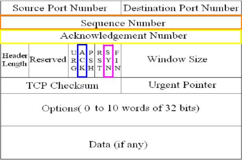
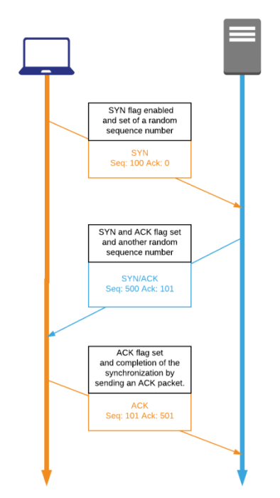

TCP & UDP protocols
TCP = Transmission Control Protocol
UDP = User Datagram Protocol
| TCP |
UDP |
| Lower throughput |
Better throughput: higher number of packets per second, in fact, it is used by
multimedia applications(es: VoIP, video streaming) that can tolerate packet loss(glitch audio or video) but
are more throughput intensive |
| Connection-oriented: must establish a connection
before transferring data |
Connectionless |
| Guarantees delivery |
Does not guarantee packet delivery |
TCP Three Way Handshake
TCP header fields involved in the handshake:•
Sequence number
• Acknowledgment numbers
• SYN and ACK flags(each flag is 1 bit that can be setted true or
false)
phases of the TCP Three Way Handshake:• host sends a SYN to the
receiving server
• Server sends a ACK for the SYN of the host, and send its own SYN
• host sends an ACK
for the SYN of the server

Bibliography:- Martin Brown, “Guide to IP Layer Network
Administration with Linux”
http://linux-ip.net/html/- Lydia
ParzialeDavid T. BrittChuck DavisJason ForresterWei LiuCarolyn MatthewsNicolas Rosselot “TCP/IP Tutorial
andTechnical Overview”
https://www.redbooks.ibm.com/redbooks/pdfs/gg243376.pdf-
James Summers, "Packet Analysis Reference Guide"
https://usermanual.wiki/Document/PacketAnalysisReferenceGuidev30.1705478462/view